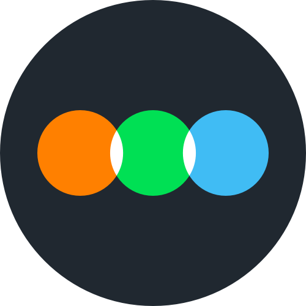

hello, visitor 🍵
this is
mohit'swebsite. i am currently a high school senior.
i'm interested in maths and design.
i like everything Radiohead and motorsport. my favorite directors are Krzysztof Kieślowski and Andrei Tarkovksy. my all-time favorite movies are Fallen Angels, Blind Chance, Ivan's Childhood and Whiplash. my long-time favorite shows are House MD and the miniseries Chernobyl.
this website design was inspired in part by GreaterWrong, LessWrong's alternate browser, and one of my favorite sites on the interwebs.
you can find my watchlist and movie ratings on my letterboxd
 and my scrobbles on my last.fm
 . i am presently not available for contact.
. i am presently not available for contact.
i intend to keep adding features and content. this website will continously evolve; but the pace is mostly dependent on me finding time.